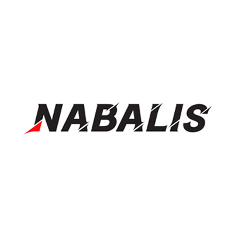
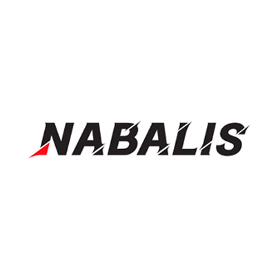

Where to start?
Getting into this wonderfull hobie has never been easier but it can still be hard to know the best places to get your first balisong. First on the left we have Amazon. Amazon has become a great place to buy balisongs without much hassle. On amazon there are many excalent choices such as Nabalis, however there are also a lot more bad options that wont last more than a month, so be careful with what you buy and do reaserch on the balisong you are going to buy. Next we have BBbarfly, their balisongs are always in stock and are made extreamly well. As their name sugests all of there balisongs are also botle openers (unless you choose a specific blade style.) They have a wide range of options rangeing from 30$ up to 200$ and all of them are great and have a wide range of colors you can chose from. You can even choose the individual color of each handle! Next is squid industries. They are probably the largest balisong company from america. Next is Nabalis, they have their own website but they also sell on amazon if you wish to buy though there. Nablis is a chinese balisong company but unlike most chinese balisong companies they genuanly love the comunity and produce great quality balisongs for an unbeatable price, all of there balisongs will serve you well.

 

On the left is Machinewise, they are a high end balisong company known for making the best tuned balisongs. Their balisongs are all above 100$ but all of them are of incredible quality. Each balisong is tuned with no play (realy, the handles dont move but still free swing, its impresive.) Their customer service is also known to be the top of the top, someone broke the blade of their knife and got a new balisong free of charge from them, you cant go wrong with them, the extra price is worth it. Next is LDY, they are a chinese company just like nabalis. just like nabalis they care for the comunity and make exreamly high end balisongs ranging from just 32$ all the way up to 500+. all of thier balisongs run on bushings (yes even their plastic ones) ensuring a good tune but not as good as machinewise. Lastly is not a balisong company but instead a comunity which you can go to for reaserch. Its r/balisongs on reddit. They post reviews of less known balisongs, well know balisongs, they do modding and expirements, they have faqs for new flippers and more. Its a great resource for new flippers.